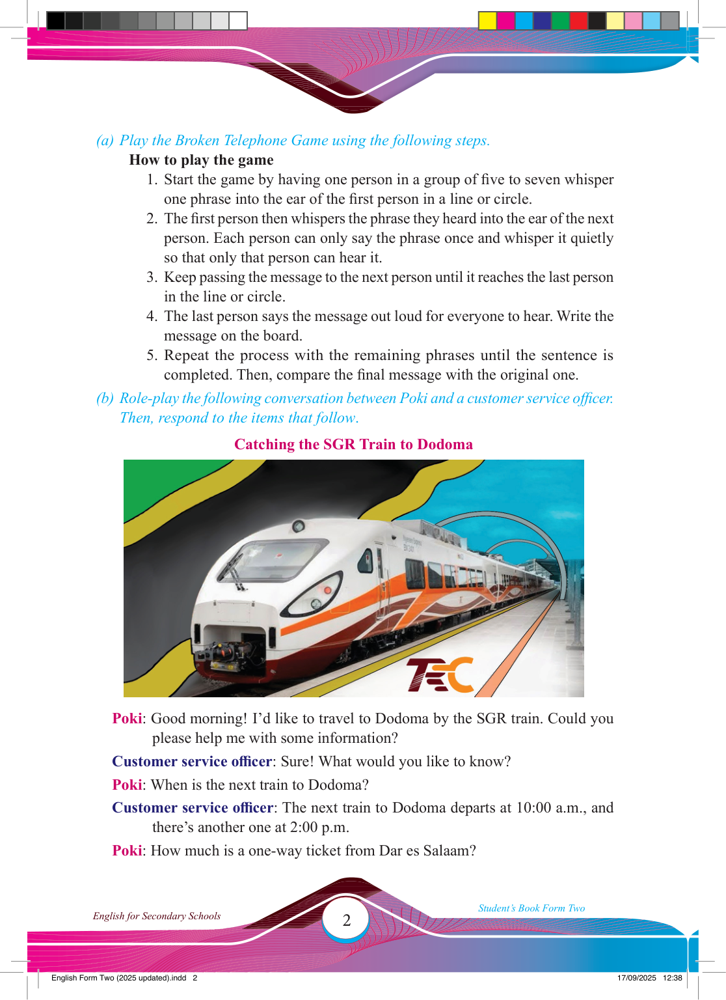

2
Student’s Book Form Two
English for Secondary Schools
(a) Play the Broken Telephone Game using the following steps.
How to play the game
1. Start the game by having one person in a group of fi ve to seven whisper one phrase into the ear of the fi rst person in a line or circle.
2. The fi rst person then whispers the phrase they heard into the ear of the next person. Each person can only say the phrase once and whisper it quietly so that only that person can hear it.
3. Keep passing the message to the next person until it reaches the last person in the line or circle.
4. The last person says the message out loud for everyone to hear. Write the message on the board.
5. Repeat the process with the remaining phrases until the sentence is completed. Then, compare the fi nal message with the original one.
(b) Role-play the following conversation between Poki and a customer service offi cer.
Then, respond to the items that follow.
Catching the SGR Train to Dodoma
Poki: Good morning! I’d like to travel to Dodoma by the SGR train. Could you please help me with some information?
Customer service offi cer: Sure! What would you like to know?
Poki: When is the next train to Dodoma?
Customer service offi cer: The next train to Dodoma departs at 10:00 a.m., and there’s another one at 2:00 p.m.
Poki: How much is a one-way ticket from Dar es Salaam?
17/09/2025 12:38